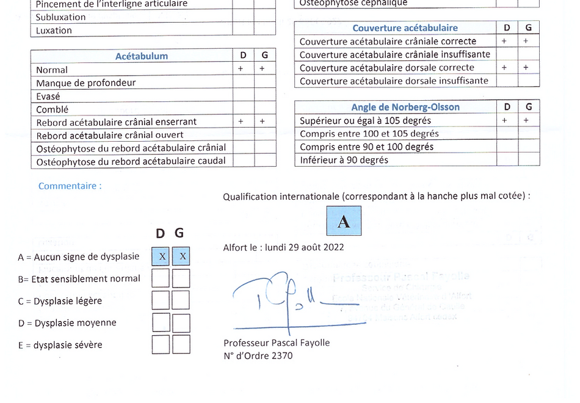

Avant de commencer à faire de l'élevage il faut vérifier le comportement et la santé de votre chien.
Le Kelpie Australien est avant tout un chien sélectionné pour le travail ou le sport. En effet, la base de la sélection de cet élevage est surtout la polyvalence dans les disciplines, mais aussi la morphologie, santé (dépistage des maladies héréditaires) et également le comportement / tempérament.
Une sélection comportementale
Sur le plan comportemental, Ringarooma S'NYX est une excellente chienne de famille, elle adore ses congénères de toutes tailles, tous poids, toutes couleurs, elle aime l'humain de manière générale (de l'enfant en bas âge, aux personnes âgées).
Beaucoup de disponibilité au travail, déterminé dans ce qu'elle fait, hyper active quand il s'agit de travailler. En dehors du travail, S'NYX est une chienne parfaite qui est très calme.
Quand ils sont jeunes les Kelpies Australiens ne sont pas des chiens de tout repos, c'est quelque chose qu'il faut savoir amener. S'NYX petite ne se reposait JAMAIS !!! Il a fallu lui apprendre.
Une sélection de santé
Avoir un chien qui travail et qui sociabilise c'est bien ! Qu'il soit en parfaite santé c'est encore mieux !
Le Kelpie Australien peut être atteint de plusieurs maladies comme l' Abiotrophie Cérébelleuse sous deux formes (Forme précoce LINGO 3 et la forme tardive VMP1), mais aussi des problèmes de maladie ophtalmique héréditaire qui malheureusement amène à des cataractes et l'anomalie de l'œil du Colley ainsi que des problèmes de Dysplasie (Hanche et coude).
Toutes ces maladies ont bien entendu été toutes dépisté chez Ringarooma S'nyx et il s'avère qu'elle est indemne de toutes maladie potentiellement héréditaire. Vos chiots partiront sur une base saine :)
Les résultats des dépistages sont disponible par mail sans aucuns soucis et vous serons montré lors de la réservation de votre chiot.
Tous les résultats sont visibles sur le site du club de race du kelpie Australien. Mais également sur LOF SELECT : Fiche de S'Nyx